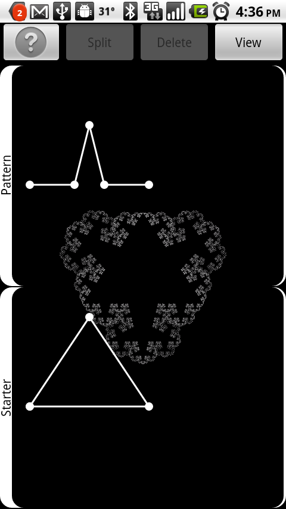
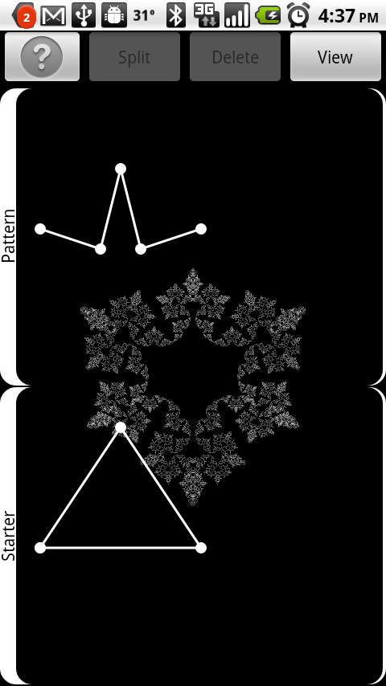
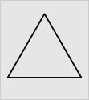
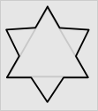
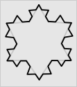
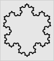
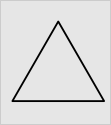
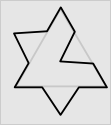
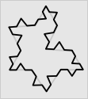
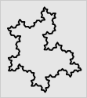

Snow Dragon 
Download it from the Android Market
Download it from the Amazon App Store
Snow Dragon lets you create and share fascinating fractal designs.
There is a simple edit view where you do your creative work. By touching the lines and points you can adjust the shape of both the starter shape (the lower area) and the pattern shape (the upper area).

Very small changes in the position of the points can make a remarkable difference in the overall fractal shape. Notice here how just moving the first and last points of the pattern up a bit the whole fractal changes.
There is also a rendering view where you can see your creation completely and zoom, rotate and pan. You can also add more detail (which takes more computing time).
The following is from the help screen for Snow Dragon:
The fractals come in two flavors: snowflakes and dragons. Both have a starter shape and a pattern shape that you draw. They differ in how the pattern is applied:
Snowflakes
|

Starter
|

Pattern applied once
|
|

Pattern applied twice
|

Pattern applied three times
|
Dragons
|

Starter
|

Pattern applied once
|
|

Pattern applied twice
|

Pattern applied three times
|
Editing Tips
Touch a point where two lines join to select it. Drag the point to move it around. Use the Delete button to remove a point and join the adjacent lines.
Touch a line to select it. Use the Split button to add a new point in the middle of the line.
Viewing Tips
When you press the View button you get a full-screen display of your drawing.
Pinch to zoom in and out and to rotate the drawing.
Double-tap to reset the zoom back to the default (fit to screen).
Use the More Detail and Less Detail buttons to change the level of detail calculated. More detail means longer compute times and slower zooming and panning.
Preferences
The Properties menu lets you adjust several properties of your drawing. These properties are unique to each drawing you do. For example, you may have different colors for each drawing.
Snowflake / Dragon Change the type of drawing used.
Snap to grid forces your points to align to an invisible grid making it easier to line things up.
Line color lets you choose the color for your line.
Notes lets you enter text notes to comment on your shape or help you remember why it was interesting (or not).
What's it doing?
To create your Snow Dragon the program replaces each line in your starter shape with a copy of your pattern shape scaled and rotated so that it starts and ends where the line in the starter shape starts and ends. Then Snow Dragon does the same thing to the shape that results from this ... and again to the shape that results from that one ... and on and on.
References
Snow Dragon was inspired by two classic fractal designs: Koch snowflakes and Dragon curves. For more information about these interesting shapes and the math behind them, see the excellent Wikipedia articles: Koch snowflake and Dragon curve.